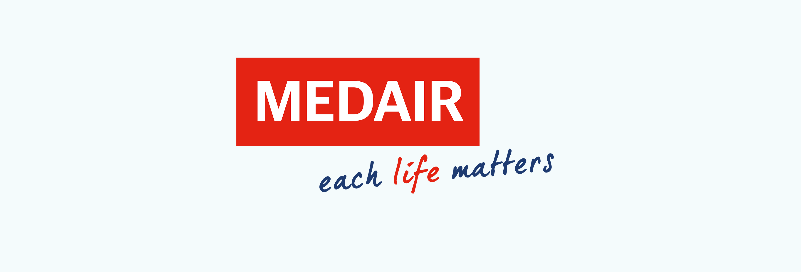

Infrastructure and WASH Adviser
Medair International, Goma, DRC Congo, 1st of July 2022 to Present

Key Areas of Accountability:
- Lead WASH technical assessments in coordination with other Medair thematic areas and other external
sector agencies. Ensure assessment findings are documented, including a specific analysis of
beneficiary's needs.
- As necessary, I provide technical checking of WASH engineering designs and hygiene promotion
programmes and proactively promote high-quality WASH technical approaches within country
programmes. I am working closely with the WASH project managers—programmes or team leaders—
to support fundraising for the WASH sector. This includes developing high-quality concept notes and
proposals and engaging with donors' technical advisers.
- Prepare and oversee WASH programme implementation to ensure timely delivery of programme
activities, such as monitoring against log frames and individual performance management work plans.
- Working closely with the HR team, identifying WASH staffing needs (national and international) for
emergency programmes, and ensuring rapid recruitment, induction and training of new staff.
- Identify WASH programme supplies needs, coordinate with the logistics team to implement a sensible
phased procurement plan, and provide proactive technical input to WASH construction and tender
procurement.
- Working closely with the Monitoring & Evaluation team, establish a sector M&E plan, ensuring this links
to reporting requirements and capacity-building for technical field staff to carry out the work.
- Working closely with the Accountability lead to implement accountability activities for your thematic
area, ensuring that feedback from all relevant stakeholders is considered in the WASH programme
design.
- I am working closely with the Country Office evidence-building team and integrating WASH aspects into
the humanitarian research and learning agenda.
- Work with the WASH team and foster a culture of innovation during the response, both on WASH
infrastructure and hygiene promotion activities.
- Identify learning and training opportunities for Medair staff and partners and work as a mentor and
role model for less experienced staff.
- Ensure that Medair's work is coordinated with the efforts of other agencies and the Government. Take
a leadership role within Interagency Coordination forums, such as the WASH cluster, to ensure the
specific needs of the vulnerable are being addressed. When needed, take the lead in technical working
groups at the national or subnational level.
- Demonstrate leadership in relation to Medair policies and practice with respect to child safeguarding,
code of conduct, health and safety, equal opportunities and other relevant policies and procedures.
- Ensure that the minimum standards of humanitarian relief are maintained in accordance with the
Sphere Charter.
- Identify opportunities and material to contribute to WASH communications and media work, acting as
a spokesperson when required.